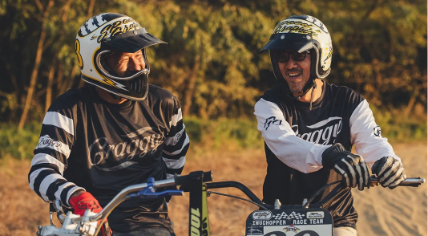

台日最強聯名！3-J.F.T. x Shakin' 本週日RIDE FREE 14正式發表
大飛是台灣彩繪圈非常具有代表性的人物，也是手工改裝圈許多店家唯一指定的彩繪師。幾年前他以3-J.F.T.之名創立了自己的品牌，並陸續推出好幾款與國外品牌或頂尖彩繪大師合作的安全帽。而繼7月推出的“叼菸鷹”Cley
Smith安全帽後，這一回3-J.F.T.則是找來日本資深彩繪大師Shakin'合作推出了雙方聯名的安全帽！...
20000 views